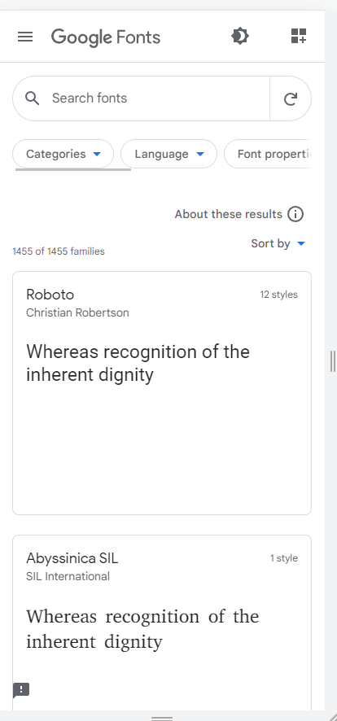
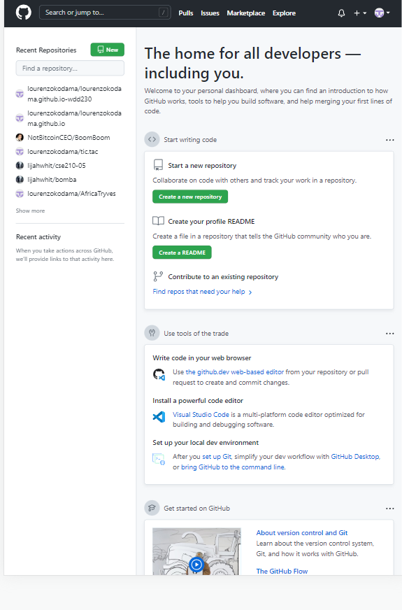

Clean Design
Google Fonts API
Google Fonts API has a good use of white-space making it have a clean design. You feel more calm when you look at those fonts and feel like clear to understand too.
Clean design comes mostly from the fact that all the fonts are separated into boxes and have spacing between them, making it more simple.
Rule of Third
Brigham Young University - Idaho
.png)
The image at the bottom of the screenshot follows the "Rule of Thirds", with the focal point (the woman's face) on the right and the text (another focal point) on the left.
When images and text are aligned this way, it makes it easier to see the focus of the image and read the text, enhancing user experience.
Alignment
GitHub
The six logos at the bottom are aligned (in pairs) vertically and horizontally, making it simple and easy to understand. All the elements on the page are horizontally centered, guiding the reading direction.
Alignment is a crucial design principle that can enhance overall aesthetics and user appeal when used effectively.